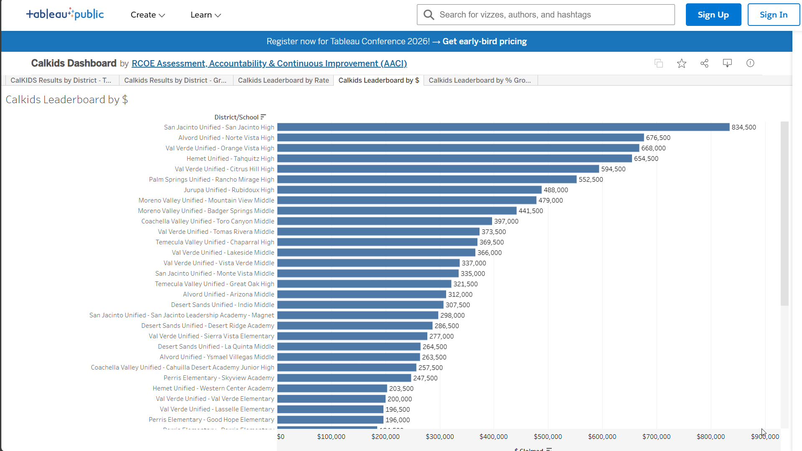
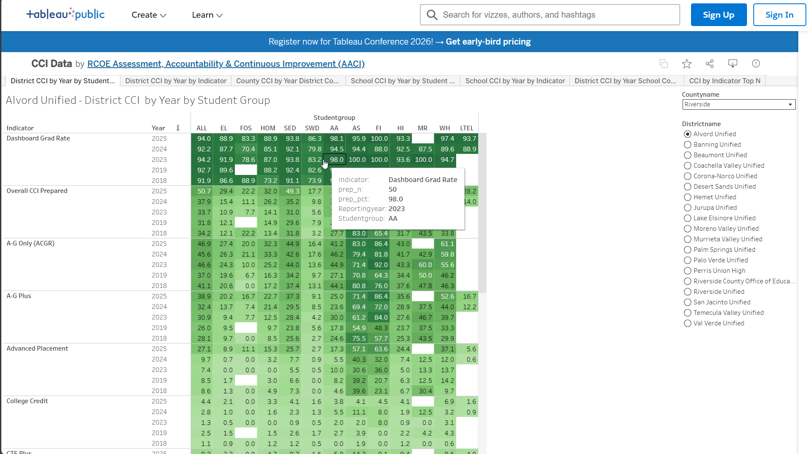
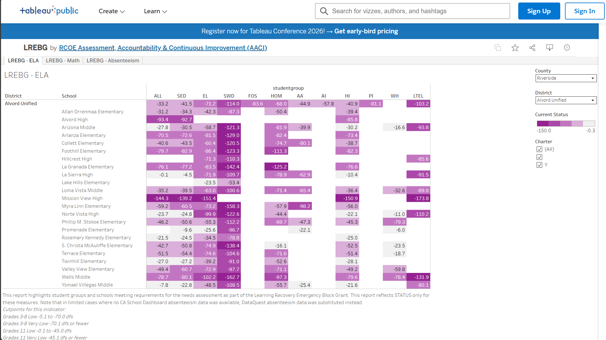
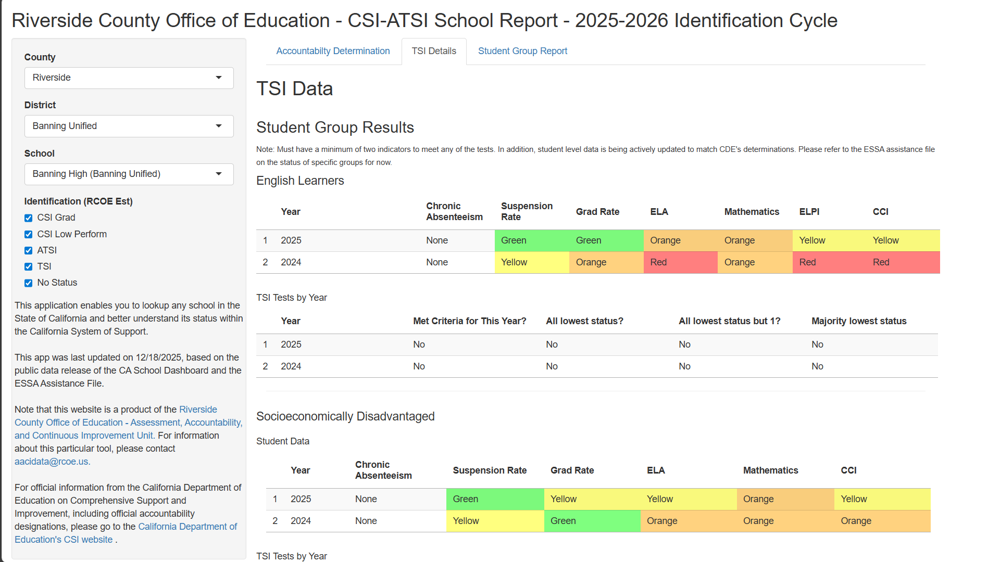

Selected Work

CAASPP/ELPAC Participation Rate Risk Report
Identifies student groups at risk of participation rate penalties on annual state assessments.
Tableau

CalKIDS Results by District
Monitors college savings account registration and claiming across 23 districts.
Tableau

CCI Data: District CCI by Year by Student Group
College/Career Indicator trends disaggregated by student group.
Tableau

LREBG Needs Assessment Dashboard
Learning Recovery Emergency Block Grant needs assessment for targeted student groups.
Tableau

CSI-ATSI School Identification Report
Annually updated school identification tool based on California Dashboard business rules. Running since 2018.
R / Shiny